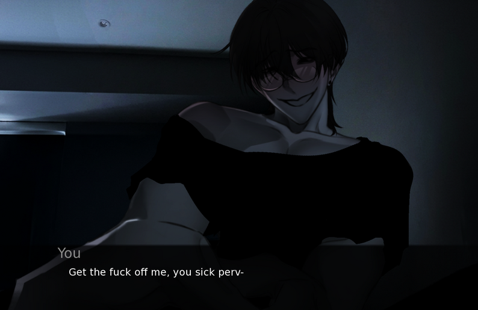
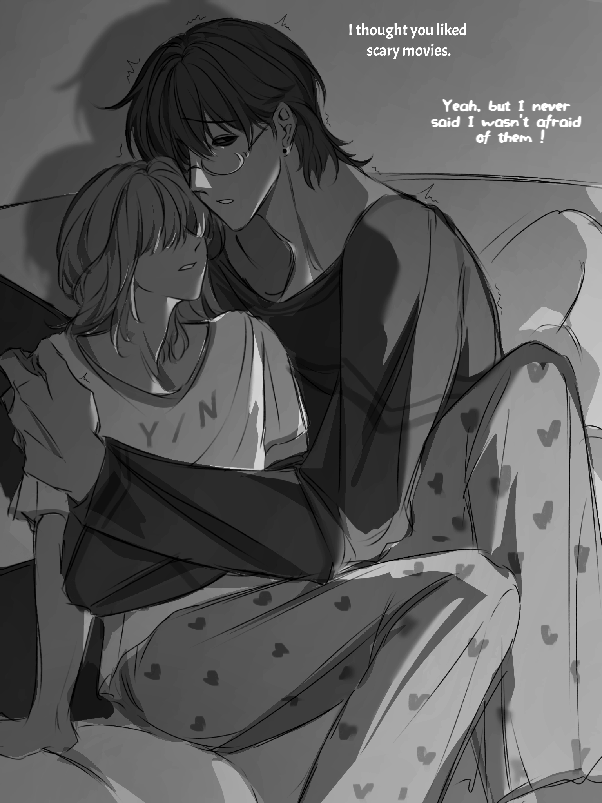

A psychological horror visual novel filled with emotional tension, branching endings, and one terrifying night trapped with Min.
Play In BrowserSurvive Min is a psychological horror visual novel centered around a terrifying night trapped inside your home with an unpredictable entity named Min.
Strange noises begin echoing outside your house. People around the neighborhood have started disappearing, and bodies are being discovered nearby.
Then one night, the sounds stop coming from outside. They begin coming from inside your room.


Every interaction with Min feels emotionally unstable and unpredictable.
Branching dialogue choices can completely change the outcome of the story.
Strong character expressions and unsettling presentation create intense tension.
Many players originally experienced download and installation issues, especially on mobile devices.
The browser-accessible version helps more people experience Survive Min directly online across desktop and mobile browsers.